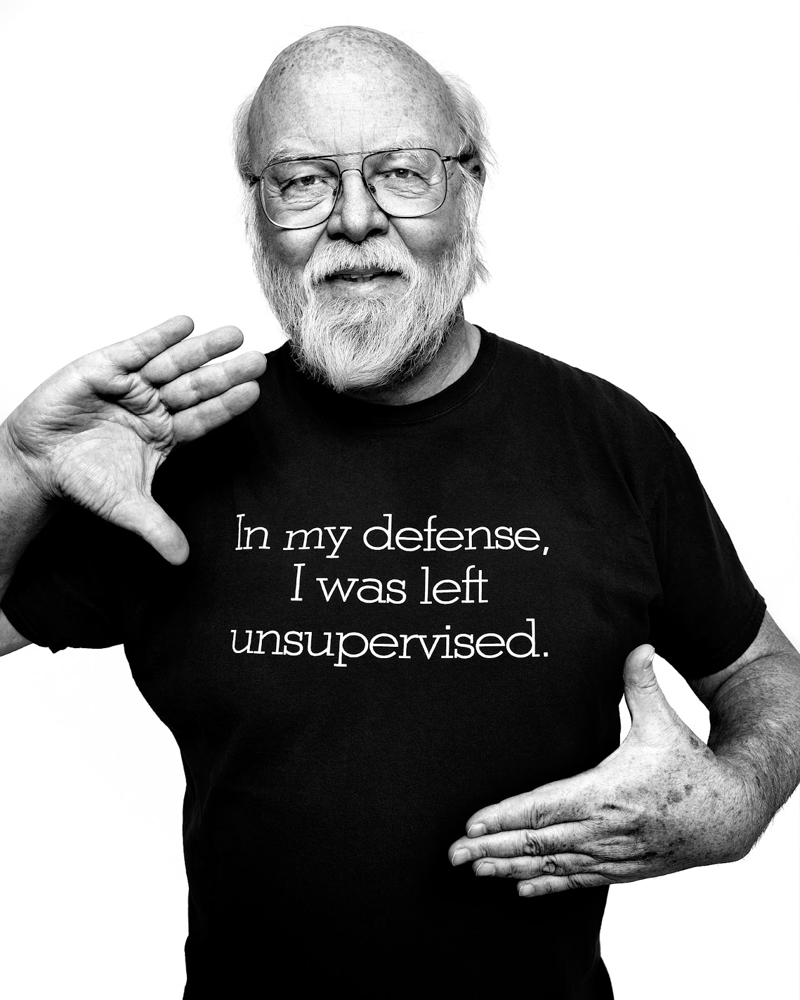

Введение

Джеймс Гослинг — канадский информатик и программист, известный как "отец-основатель" языка программирования Java. Он также создал оконную систему NeWS и участвовал в разработке Gosling Emacs. После работы в Sun Microsystems (где и был создан Java), Гослинг ушел из-за поглощения компанией Oracle, а затем работал в Google, Liquid Robotics и Amazon Web Services. Получил степень бакалавра информатики в 1977 году в Университете Калгари и докторскую степень в Университете Карнеги-Меллон в 1983 году.
Кофе не помогает программировать, зато он приятен на вкус
©Джеймс Гослинг
James Gosling is a Canadian computer scientist and programmer, known as the "founding father" of the Java programming language.